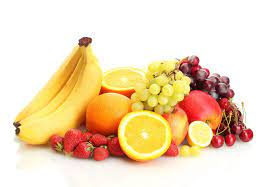
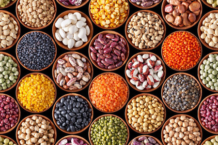

Alimentos importantes para una vida saludable
-
Frutas

- Ricas en vitaminas.
- Bajas en calorías.
- Favorecen la digestión.
-
Verduras
- Altas en fibra.
- Gran cantidad de antioxidantes.
- Ayudan a mejorar el sistema inmunológico.
-
Legumbres

- Aporte de proteínas vegetales.
- Fuente de hierro y calcio.
- Ricas en fibra dietética.
-
Cereales
- Ricos en hidratos de carbono complejos.
- Aportan energía de larga duración.
- Fuente de vitaminas del grupo B.
-
Lácteos
- Fuente de calcio.
- Aporte de proteínas de alta calidad.
- Contienen probióticos beneficiosos para la flora intestinal.